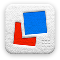

The Letterpress Index
A compendium of facts and figures about the beloved iOS game, prepared in the style of
Harper's Index.
-
Price in cents:
99
-
Words played in the first week following release:
15 Million
-
Position on App Store charts after a week:
14
-
Words allowed in Scrabble's Tournament Word List:
267,751
-
Words allowed in Letterpress' word list:
271,377
-
Words allowed in Letterpress but not Scrabble:
4,021
-
Words allowed in Scrabble but not Letterpress:
395
-
Characters in longest allowed word in Letterpress:
21
-
Longest allowed word in Letterpress:
microminiaturizations
-
Number of 21-letter words allowed word in Letterpress, excluding 'microminiaturizations':
2
-
Characters in longest allowed word in Scrabble:
15
-
Columns on a Scrabble board:
15
-
Fifteen-letter words in Scrabble:
5,757
-
Most ridiculous allowed word in Letterpress:
zzzs
-
Most Germanic word allowed in Scrabble but not Letterpess:
apfelstrudel
-
Lines of ruby code used to prepare above figures:
4
{kind=link}